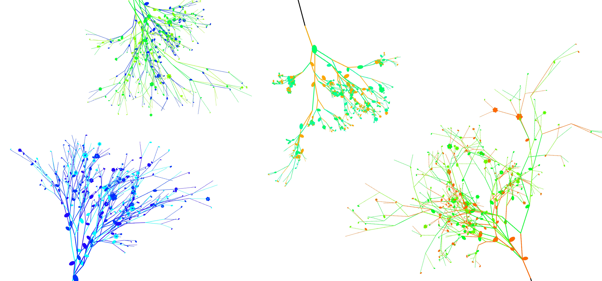
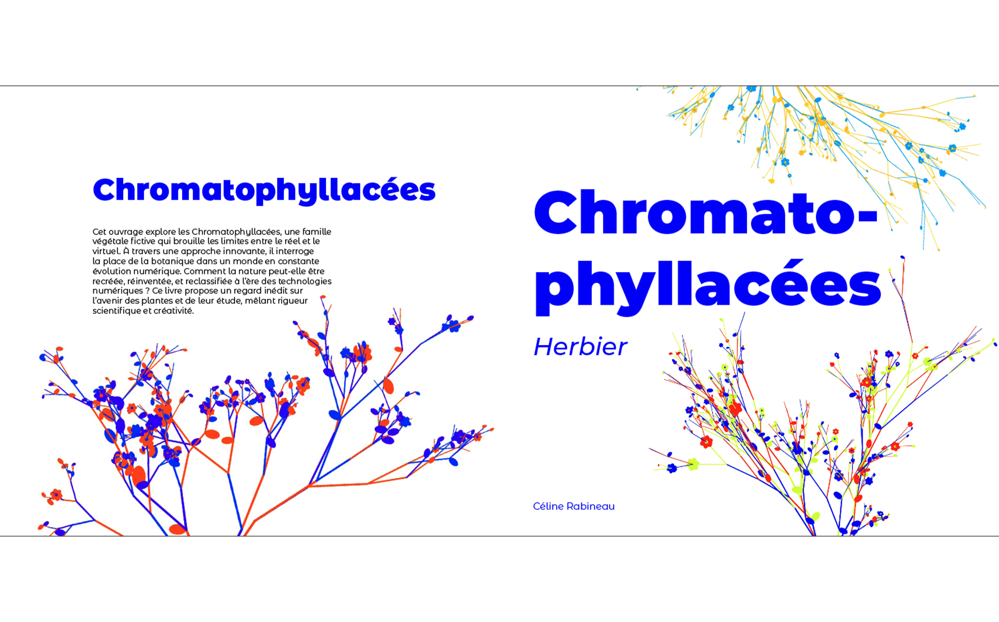
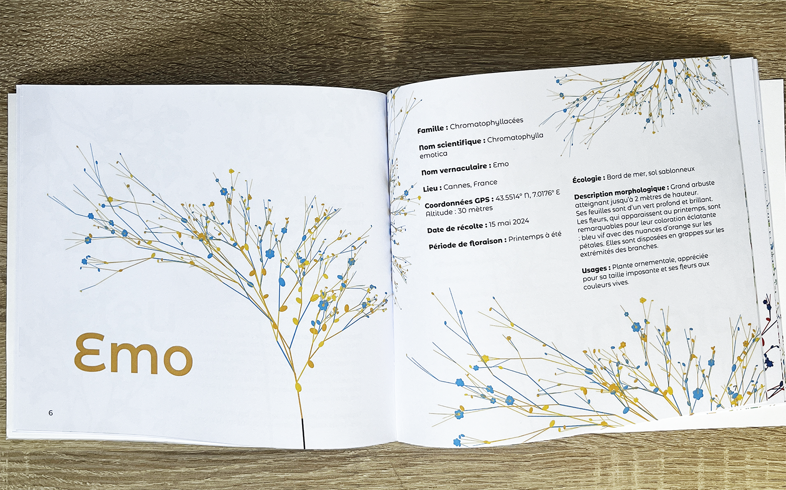
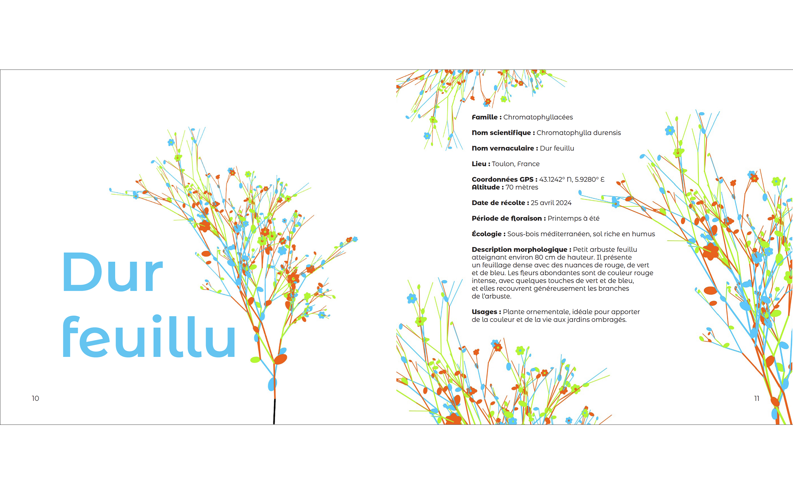

Dans un monde où les frontières entre le réel et le virtuel deviennent de plus en plus floues,
la nature elle-même n’échappe plus à cette hybridation. Cet ouvrage propose de repenser la
botanique en explorant les potentialités offertes par les technologies numériques et
l’intelligence artificielle.
Les Chromatophyllacées sont une famille de plantes imaginaires, conçue avec p5.js et ChatGPT,
pour interroger la manière dont nous percevons, classifions et comprenons le vivant à une
époque où l’imaginaire peut prendre forme grâce aux outils numériques.
Ce livre est une invitation à réfléchir à l’évolution des pratiques scientifiques et
à la possibilité d’un futur où les espèces virtuelles viendraient enrichir l’étude du vivant.
Il s’adresse à celles et ceux qui s’interrogent sur l’avenir de la nature, à la croisée de
la biologie et de la technologie.
Coécrit avec ChatGPT

